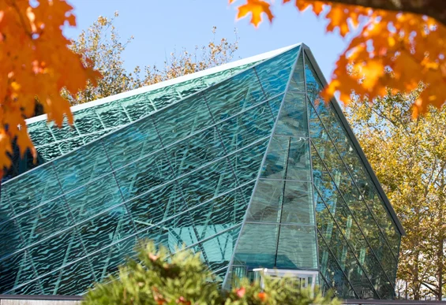

A community public university in the heart of the Hudson Valley, where students learn, create, explore, and prepare for their futures.
Explore Academics AdmissionsA distinctive university experience combining strong academics, creative opportunities, and a beautiful Hudson Valley setting.

The State University of New York at New Paltz offers students opportunities to pursue their interests in a supportive and engaging academic environment.
Located near the Shawangunk Ridge and the Hudson Valley, the campus provides a unique combination of college life, culture, nature, and community.
Students can choose from a broad range of programs while participating in clubs, organizations, athletics, research, internships, and creative activities.
Programs & Areas of Study
Beautiful Hudson Valley Campus
Student Athletics & Activities
Clubs & Organizations
Explore disciplines and experiences designed to help students develop knowledge, creativity, and career-ready skills.
Explore subjects ranging from the humanities and social sciences to mathematics and natural sciences.
Develop your creative voice through opportunities in art, design, music, theater, and related fields.
Build practical skills and explore professional pathways through business and career-focused programs.
There's more to college than the classroom. Discover the people, places, and activities that make campus life memorable.
Connect with classmates and build lasting friendships.
Explore the natural beauty surrounding New Paltz.
Stay active and represent the Hawks.
Join organizations, events, and activities across campus.
Interested in becoming part of the SUNY New Paltz community? Explore programs, admissions information, financial aid, and campus resources.